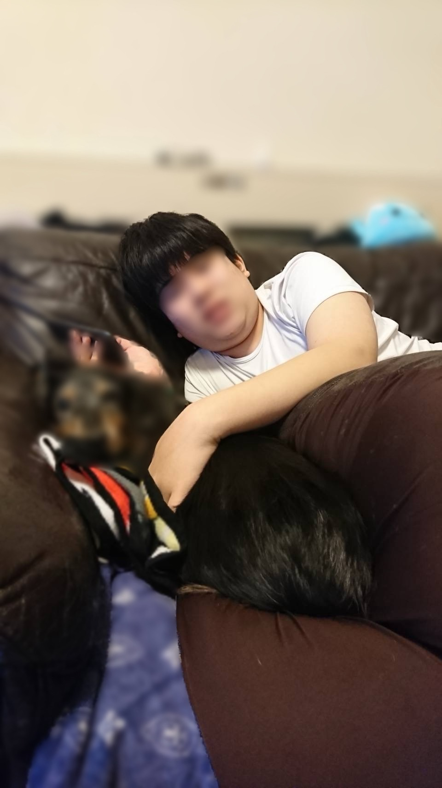
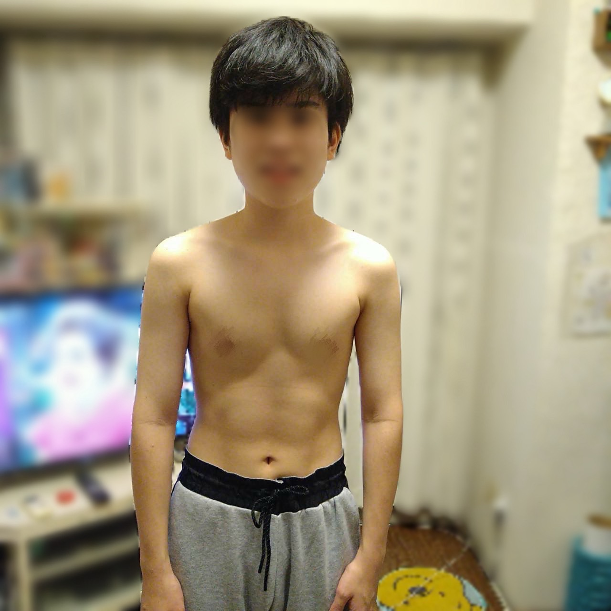

ダイエットしようと思った理由
その時は、コロナウイルスが流行っており運動はほとんどしておらず、家でスマホやゲームをして過ごすことが多かったです。
外に出ることも少なく、体を動かす習慣はほぼありませんでした。
その結果、少しずつ体重が増えていき、気づいたときには13歳で160㎝ 73kg見た目もかなり変わってしまっていました。
体育の授業の持久走ではどべで1.5㎞ 12分という恥ずかしいタイムになり、このままじゃいけないと思いダイエットをすることを決意しました。
実際に太っていた時の写真がこちらです

普段はそこまで気にしていなかったのですが、写真で見ると明らかに太っていて、「これはやばい」と思いました。
このままでは自分に自信も持てないと思い、本気でダイエットを始めることにしました。
ダイエット中の1日の生活
朝は学校で起きるのが遅くて食べれてません（笑）昼は普通に食べるようにしていました。
夜はできるだけ量を減らし、特に白米を控えるようにしていました。
また、毎日10分でもいいのでランニングを続けることを意識していました。
20キロ痩せたダイエットメニュー
- 有酸素運動（10分ランニング）
- ジュースをやめて水に変更（お菓子は禁止）
- 夜ご飯の量を減らす（白米控えめ）
しんどかったこと
今まで普通に食べていたお菓子やジュースを我慢するのがきつく、最初の1〜2週間はかなりつらかったです。 それでも我慢して続けていくうちに少しずつ慣れてきて、気づけば自然と食べなくても大丈夫になっていました。
一ヶ月5kgほど痩せていき、とてもモチベーションが上がりました。
痩せた結果
20kg痩せたときの写真がこちらです

4ヶ月のダイエットを続けた結果、体重は73kgから50kgまで減らすことができました。
見た目も大きく変わり、顔やお腹まわりがかなりスッキリして、周りの人からも「痩せたね」と言われることが増えました。
一番大きく変わったと感じたのは、運動の面です。
太っていた頃は、体育の持久走（1.5km）で12分かかってしまい、正直かなりきつかったです。
ですが、痩せた後は同じ1.5kmを7分で走れるようになりました。
走っても前みたいにすぐ息が上がることもなくなり、「体が軽い」とはこういうことなんだと実感しました。
また、日常生活でも疲れにくくなり、階段の上り下りやちょっとした移動でも楽になりました。
以前は動くのがめんどくさいと感じていたのが、自然と体を動かせるようになったのも大きな変化です。
見た目だけでなく、体力や気持ちの面でも大きく変わり、自分に自信を持てるようになりました。
「やれば変われる」という実感が持てたことが、このダイエットで一番良かったことだと思います。
ダイエットを続けるコツ
最初の1〜2週間が一番きついですが、そこを乗り越えると少しずつ慣れてきます。
自分は「完璧にやろう」とせず、できることをコツコツ続けることを意識しました。
例えば、ジュースを水に変えるだけでも大きな変化になります。
これからダイエットする人へ
最初はつらいと思いますが、必ず慣れてきます。
少しの積み重ねが大きな結果につながるので、焦らず続けてみてください。